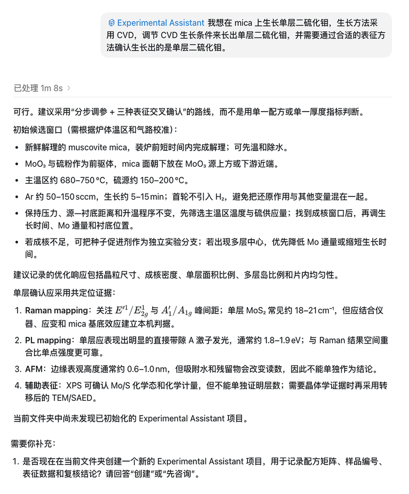
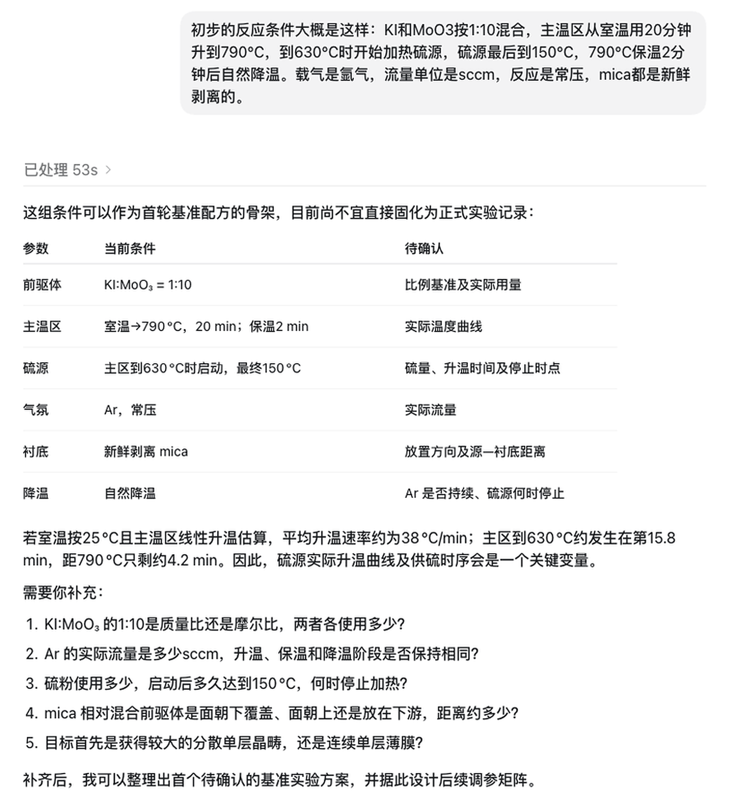
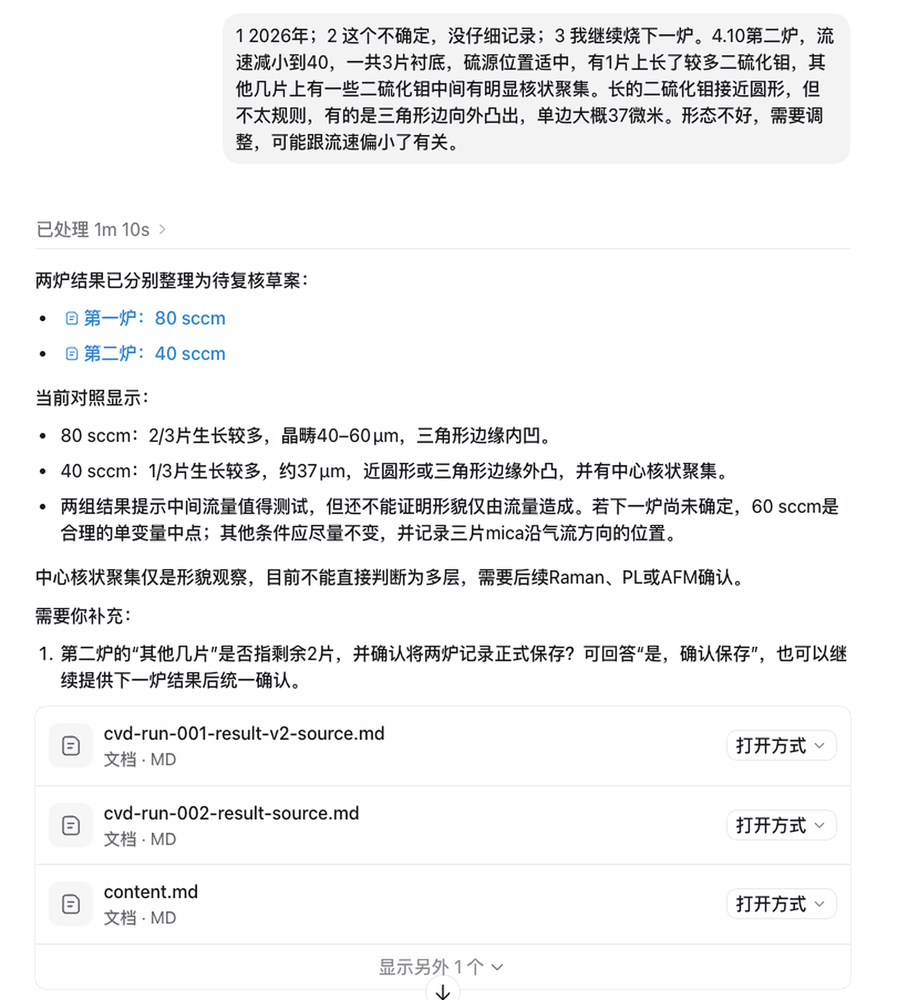
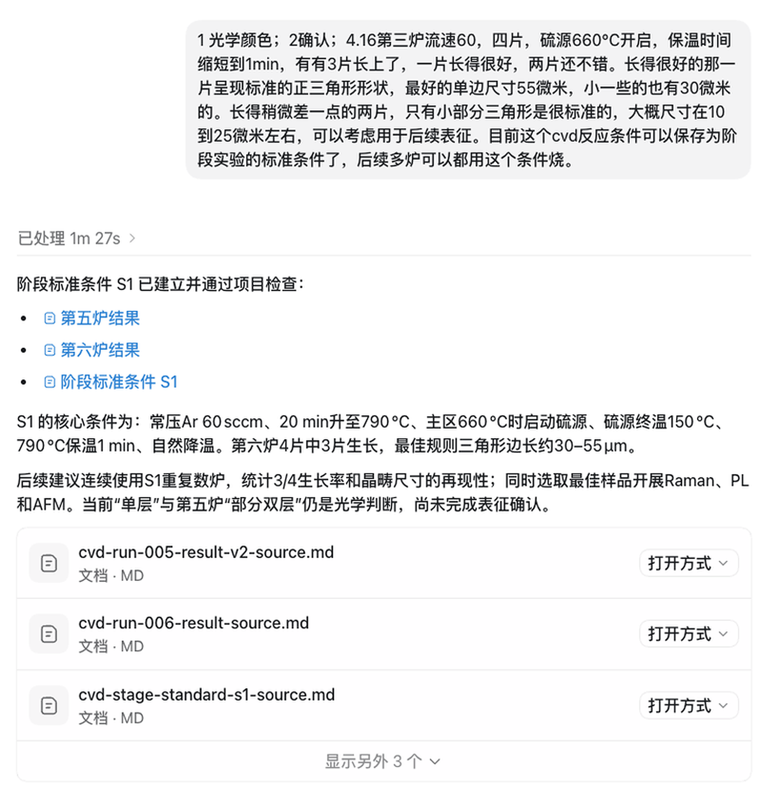
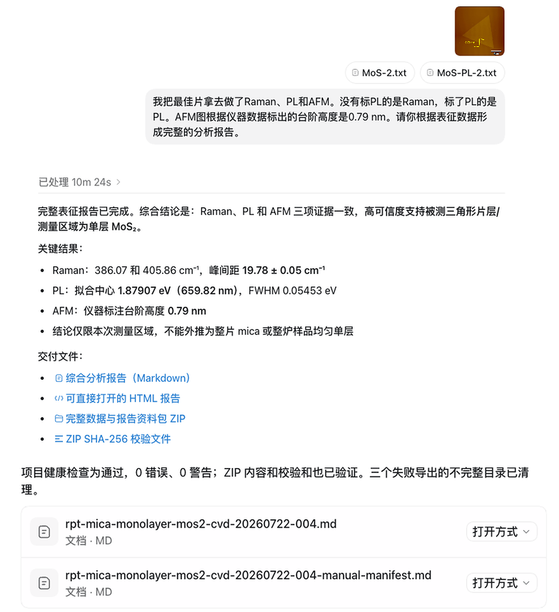

Q01
60 秒快速浏览
一条连续的研究工作流
每个阶段默认展示一张代表性问答；点击阶段下方的展开栏，可以按时间顺序查看该阶段全部问答。
01
Research setup
研究目标与项目创建
用户只需要说明想研究什么。EA 先理解目标、提出实验和表征路线，再在获得确认后建立正式项目。

查看本阶段全部 2 组问答
Q02
02
Baseline review
基线实验方法确认
EA 从普通实验描述中提取条件，把已知、近似和未知信息分开记录，再通过几轮自然对话形成可复核的基线方案。

查看本阶段全部 3 组问答
Q03
Q04
Q05
03
Experiment history
连续实验日志与跨炉比较
实验者继续用日常语言逐炉记录。EA 将观察事实、用户推测、混杂变量和下一步建议分开，并在新记录到来时自动形成跨炉比较。

查看本阶段全部 5 组问答
Q06
Q07
Q08
Q09
Q10
04
Controlled optimization
供硫优化与阶段标准
当结果相互牵连时，EA 优先固定硫源几何状态、记录真实温度曲线，并用单变量测试筛选启动点与终温，最后再形成阶段条件。

查看本阶段全部 3 组问答
Q11
Q12
Q13
05
Characterization
Raman、PL 与 AFM 综合分析
EA 先帮助选择代表样品和测点，再把三类表征放入同一证据框架中，明确结果、可信度和外推边界。

查看本阶段全部 2 组问答
Q14
Q15
06
Generated report
EA 实际生成的完整数据分析报告
报告保留样品与数据来源、处理方法、拟合结果、图表、证据交叉判断、限制和溯源摘要。它不是重新排版的宣传稿，而是本次 Demo 的真实输出。
Raman 峰386.07 / 405.86 cm⁻¹
峰间距19.78 ± 0.05 cm⁻¹
PL 主峰1.879 eV
AFM 台阶0.79 nm
在本页展开完整 HTML 报告
What this demo shows
普通输入，持续记录，审慎结论
整个过程中，用户不需要编写结构化命令。EA 将自然语言转成可追溯记录，但不会把缺失参数、用户推测或单次实验结果自动升级为确定事实。